Pred uporabo ukazov poskrbi, da se topologija omrežja ujema s topologijo na sliki. Modri simboli predstavljajo VyOS usmerjevalnik.

10.A.0.0/24
192.168.B.0/24
172.16.C.0/24
Za konfiguracijo PC1 ne rabiš odpirati konzole, ampak right-click na PC1 → Edit config.
set pcname PC1
ip 192.168.B.PC1 /24 192.168.B.1
Za konfiguracijo PC2 ne rabiš odpirati konzole, ampak right-click na PC2 → Edit config.
set pcname PC2
ip 172.16.C.PC2 /24 172.16.C.1
Za konfiguracijo PC3 ne rabiš odpirati konzole, ampak right-click na PC3 → Edit config.
set pcname PC3
ip 10.A.0.PC3 /24 10.A.0.1
configure
set interfaces ethernet eth0 address 192.168.B.1/24
set interfaces ethernet eth1 address 1.1.1.1/30
set interfaces ethernet eth2 address 1.1.1.9/30
set protocols bgp AS(R1) neighbor 1.1.1.2 remote-as 'AS(R2)'
set protocols bgp AS(R1) neighbor 1.1.1.10 remote-as 'AS(R3)'
set protocols bgp AS(R1) neighbor 1.1.1.2 update-source 1.1.1.1
set protocols bgp AS(R1) neighbor 1.1.1.10 update-source 1.1.1.9
set protocols bgp AS(R1) parameters router-id 1.1.1.1
set protocols bgp AS(R1) parameters router-id 1.1.1.9
set protocols bgp AS(R1) network 192.168.B.0/24
commit
save
exit
configure
set interfaces ethernet eth0 address 172.16.C.1/24
set interfaces ethernet eth1 address 1.1.1.2/30
set interfaces ethernet eth2 address 1.1.1.5/30
set protocols bgp AS(R2) neighbor 1.1.1.1 remote-as 'AS(R1)'
set protocols bgp AS(R2) neighbor 1.1.1.6 remote-as 'AS(R3)'
set protocols bgp AS(R2) neighbor 1.1.1.1 update-source 1.1.1.2
set protocols bgp AS(R2) neighbor 1.1.1.6 update-source 1.1.1.5
set protocols bgp AS(R2) parameters router-id 1.1.1.2
set protocols bgp AS(R2) parameters router-id 1.1.1.5
set protocols bgp AS(R2) network 172.16.C.0/24
commit
save
exit
configure
set interfaces ethernet eth0 address 10.A.0.1/24
set interfaces ethernet eth1 address 1.1.1.10/30
set interfaces ethernet eth2 address 1.1.1.6/30
set protocols bgp AS(R3) neighbor 1.1.1.5 remote-as 'AS(R2)'
set protocols bgp AS(R3) neighbor 1.1.1.9 remote-as 'AS(R1)'
set protocols bgp AS(R3) neighbor 1.1.1.5 update-source 1.1.1.6
set protocols bgp AS(R3) neighbor 1.1.1.9 update-source 1.1.1.10
set protocols bgp AS(R3) parameters router-id 1.1.1.10
set protocols bgp AS(R3) parameters router-id 1.1.1.6
set protocols bgp AS(R3) network 10.A.0.0/24
commit
save
exit